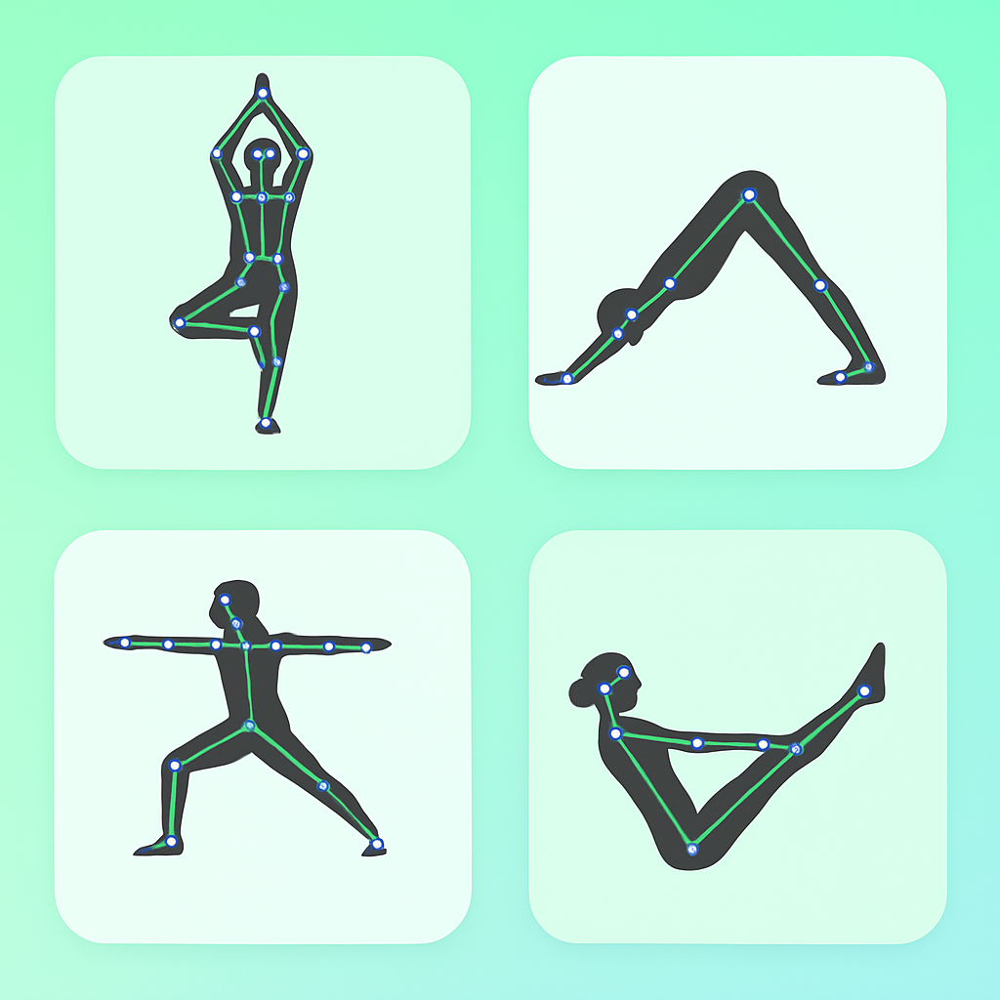

Explorations In Yoga Pose Detection Using Computer Vision Models

Designed and evaluated a real-time
Yoga Pose Detection System
integrating MediaPipe and
MoveNet models to analyze human
postures and provide instant feedback for pose correction.
Conducted data-driven model
comparisons using a dataset of
6,000 labeled images across five
yoga asanas: Plank, Warrior, Tree, Downdog, and Goddess, achieving
accuracies between 95.4% and
98.7% with MediaPipe.
Applied the complete
machine learning lifecycle,
including data preprocessing, model selection, training,
validation, and evaluation, to optimize pose estimation accuracy.
Conceptualized a
web-based platform allowing users
to perform yoga poses via webcam and receive
real-time feedback on alignment
and posture quality, enhancing accessibility and engagement.
Developed the
front-end interface using
HTML, CSS, and JavaScript for
live video frame processing and model inference.
Emphasized usability and impact by mapping
system accuracy, latency, and user satisfaction metrics
to assess feasibility for large-scale wellness applications.